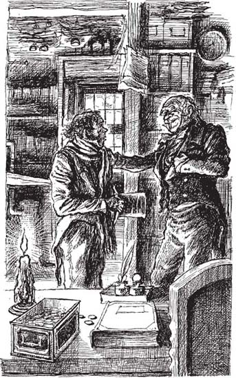

14
Listen to Part 1:

Một người đàn ông đã thay đổi
Scrooge nhắm mắt lại, rồi mở ra một lần nữa. Vâng, ông vẫn đang trong phòng ngủ của mình. Và ông vẫn còn sống!
Ông nói, "Hãy phù hộ cho anh, Jacob Marley. Cảm ơn anh vì đã đến giúp đỡ tôi. Cảm ơn anh vì đã gửi đến ba linh hồn ma."
Scrooge rất vui. Ông cực kỳ vui. Ông chạy quanh phòng. Ông nhanh chóng mặc quần áo.
Ông hét lên, "Tôi rất vui!" Tôi vui vẻ! Vui vẻ! Vui vẻ! Giáng sinh vui vẻ đến với tất cả mọi người! Giáng sinh vui vẻ đến tất cả mọi người trên thế giới!
Scrooge chạy vào phòng bên kia. Ông nhìn vào cánh cửa mà linh hồn ma của Marley đã đi vào. Ông nhìn vào cửa sổ mà linh hồn ma đã đi ra. Ông nhìn vào những nơi mà những linh hồn ma khác đã từng đến.
Scrooge biết rằng mình đã gặp được những linh hồn ma. Ông biết rằng tất cả những điều đó đã xảy ra. Và Scrooge cười rất to. Scrooge đã không cười trong nhiều năm và bây giờ ông cười rất to.
Ông bỗng dưng nói, "Hôm nay là ngày gì? Tôi đã vắng mặt bao lâu rồi?"
Rồi tiếng chuông nhà thờ bắt đầu vang lên. Tất cả các nhà thờ ở London bắt đầu đổ chuông. Scrooge chạy đến cửa sổ và mở tung cửa sổ ra.
Ông hét xuống một cậu bé ở ngoài phố, "Hôm nay là ngày gì?"
Listen to Part 2:
Cậu bé trông có vẻ rất ngạc nhiên. Rồi cậu trả lời, "Tất nhiên là Ngày Giáng sinh rồi!"
Scrooge hét lên, "Ngày Giáng sinh!" Tôi đã không bỏ lỡ ngày đó. Tất cả những chuyện đó đã xảy ra trong một đêm.
Ông hét to, "Cậu bé! Cậu có biết cửa hàng ở cuối phố không? Cậu có biết cửa hàng treo một con gà tây rất lớn ở trong cửa sổ không?"
Cậu bé hỏi, "Ông có ý nói đến con gà tây lớn bằng tôi không?"
Scrooge nói, "Đúng, đúng rồi. Tôi muốn cậu đi mua con gà tây đó cho tôi. Dặn người đàn ông trong cửa hàng mang con gà tây đến đây cho tôi. Đây là tiền cho cậu!" Và Scrooge ném một ít xu xuống.
Scrooge đi xuống cầu thang. Ông đợi người đàn ông mang con gà tây đến. Ông nhìn vào cái chốt cửa. Ông nhớ lại rằng mình đã nhìn thấy khuôn mặt của Marley ở đó.
Ông tự nói với bản thân, "Tôi sẽ luôn yêu cái chốt cửa này."
Người đàn ông đến cùng với con gà tây khổng lồ. Scrooge nói với người đàn ông, "Tôi muốn anh mang con gà tây đến địa chỉ này." Và ông báo cho người đàn ông biết nơi Bob Cratchit sống.
Sau đó, Scrooge đi dạo. Ông gặp người đàn ông đã xin ông tiền.
Scrooge nói, "Tôi rất xin lỗi vì đã không giúp ông ngày hôm qua." Sau đó, ông thì thầm vào tai người đàn ông.
Listen to Part 3:
Người đàn ông tỏ ra rất ngạc nhiên. Ông hỏi, "Số tiền đó lớn lắm. Ông có muốn cho tôi nhiều tiền đến vậy không?"
Scrooge trả lời, "Ồ, vâng! Vâng!" Tôi muốn cho ông rất nhiều tiền!
Scrooge tiếp tục đi. Ông nói chuyện với những đứa trẻ mà ông gặp trên phố. Ông nói chuyện với những người nghèo khổ. Cuối cùng, ông đến một ngôi nhà và gõ cửa. Người cháu trai của ông mở cửa.
Scrooge nói, "Chào Fred, tôi có thể vào trong không?"
Fred mỉm cười và bắt tay ông chú của mình. Ông trả lời, "Cháu rất hoan nghênh chú đến, chú ạ."
Scrooge và Linh hồn ma Quà tặng Giáng sinh đã theo dõi buổi tiệc tuyệt vời của Fred. Bây giờ, Scrooge đã đến dự bữa tiệc. Ông ăn những món ăn ngon và uống những loại rượu ngon. Ông cười đùa và chơi trò chơi với Fred, với người vợ xinh đẹp của Fred và tất cả những người bạn vui vẻ của họ.
Sáng hôm sau, Scrooge đến văn phòng rất sớm. Ông hy vọng rằng Bob Cratchit sẽ đi làm muộn. Và Bob đã đi muộn. Ông không đến vào lúc chín giờ. Ông cũng không đến vào lúc chín giờ mười lăm phút. Mười tám giờ rưỡi đã trôi qua kể từ chín giờ thì Bob mới đến.
Scrooge nói với Bob, "Ông đến muộn quá đấy!" Ông vào phòng làm việc của tôi đi.
Bob rất lo lắng. Liệu ông có bị mất việc không? Ông nói, "Một năm chỉ có một Ngày Giáng sinh thôi."
Scrooge nói, "Đúng, đúng là như vậy." Một năm chỉ có một Ngày Giáng sinh. Scrooge đặt tay lên vai Bob. "Vì vậy, tôi sẽ trả ông nhiều hơn. Tôi sẽ tăng lương cho ông!"
Listen to Part 4:
Bob rất ngạc nhiên. Liệu Scrooge có bị điên không?
Rồi Scrooge nói, "Giáng sinh vui vẻ, Bob!" Ông già nói rất nhẹ nhàng. Do đó, Bob biết rằng Scrooge không bị điên.
Bob nói, "Cảm ơn ông, thưa ông."

"Tôi sẽ trả ông nhiều hơn. Tôi sẽ tăng lương cho ông!" Scrooge nói.
Scrooge nhắc lại, "Giáng sinh vui vẻ, Bob." Bây giờ, chúng ta phải nói về gia đình ông. Cậu con trai Peter của ông sẽ sớm cần xin việc. Và chúng ta phải chăm sóc Tiny Tim nữa, đúng chứ? Chiều nay, chúng ta sẽ nói về cách tôi có thể giúp đỡ.
Scrooge tiếp tục nói, "Nhưng trước tiên," ở đây có một ít tiền. Hãy đi ra ngoài và mua thêm một ít than nào!
Scrooge đã giúp đỡ Bob và gia đình của ông. Tiny Tim đã không chết. Scrooge chăm sóc cậu bé và luôn yêu thương cậu bé.
Scrooge kết bạn rất nhiều. Ông cười và mỉm cười. Ông nói chuyện với tất cả mọi người. Ông đã tiêu tiền và giúp đỡ những người nghèo. Một số người cười ông già vì ông đã thay đổi rất nhiều. Nhưng Scrooge không bận tâm.
Listen to Part 5:
Scrooge không bao giờ gặp một linh hồn ma nào nữa. Nhưng ông tận hưởng Ngày Giáng sinh nhiều hơn bất kỳ ai khác trên thế giới này!
MỤC LỤC
- Trang tiêu đề
- Nội dung
- Ghi chú về tác giả
- Ghi chú về cuộc sống ở Anh vào thế kỷ XIX
- 1 Ebenezer Scrooge
- 2 Những vị khách của Scrooge
- 3 Bóng ma của Marley
- 4 Tin tức dành cho Scrooge
- 5 Bóng ma quà tặng Giáng sinh
- 6 Scrooge thời bé
- 7 Giáng sinh cùng gia đình Fezziwig
- 8 Cô gái yêu Scrooge
- 9 Bóng ma quà tặng hiện tại
- 10 Giáng sinh cùng gia đình Cratchit
- 11 Giáng sinh vui vẻ khắp nơi
- 12 Bóng ma quà tặng của Giáng sinh sắp đến
- 13 Tiny Tim
- 14 Một con người đã thay đổi
- Điểm cần hiểu
- Trang Bản quyền